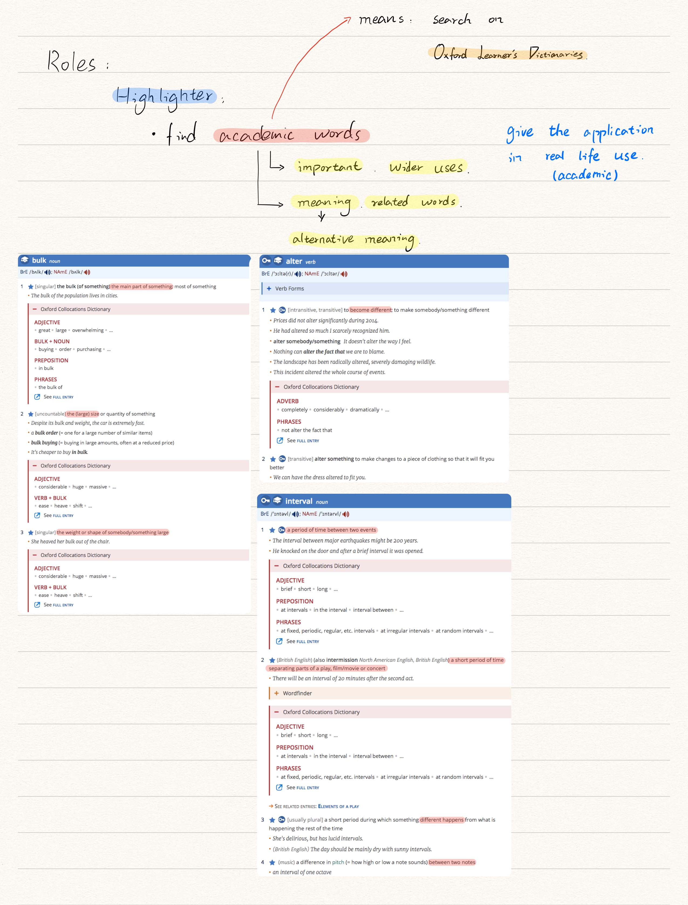
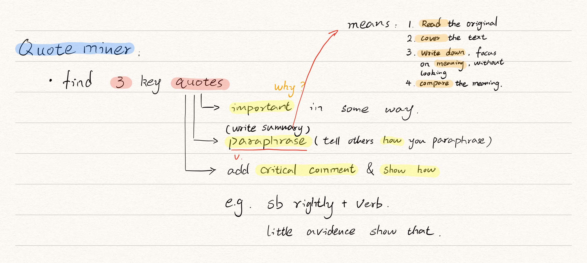

Different Roles¶
There are 6 roles in Academic Reading Circles(ARC).
Leader¶
- Prepare and ask question to check the main ideas
- Use the text structure to organise the discussion
- Ensure all students have the chance to speak
- Ask general, topic-related question at the end
Summary
Controls discussion and analyses text structure
Summarisor¶
- Summarise the main points of each section
- Identify main points examples, analysis and links
Summary
Identifies main points and key ideas in text
Connector¶
- Connect information in the text to the wider world
Summary
Create links to information in the wider world
Contexture¶
- Identify, research and explain contextual information within the text
Summary
Researches information around the text
Highlighter¶
- Identify key academic words in the text
- Research their meanings and related words
Summary
Identifies key academic words in the text
Visualiser¶
- Identify key concepts in the text
- Represent them in visual form
Summary
Represent key concepts in visual form
Example¶

